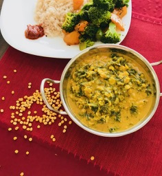

                                    <figure class="recipePage">                                        
                                        <figcaption class="caption">
                                        
                                            <!--  Copy your recipie in here -->
                                            <h1><strong>Kale with Lentils</strong></h1>
                                            <p><strong>&nbsp;</strong></p>
                                            <p><strong>Ingredients</strong></p>
                                            <ul>
                                            <li>Kale roughly chopped 1 bunch</li>
                                            <li>Split pigeon peas (toor dal) 1 cup</li>
                                            <li>Oil 1 tsp</li>
                                            <li>Mustard seeds &frac12; tsp</li>
                                            <li>Garlic 2 cloves roughly chopped</li>
                                            <li>Salt as required</li>
                                            </ul>
                                            <p>&nbsp;<strong>For Grinding:</strong></p>
                                            <ul>
                                            <li>Coconut grated 1 cup</li>
                                            <li>Dry red chilies about 5 or as required</li>
                                            <li>Turmeric &frac12; tsp</li>
                                            <li>Coriander seeds 1 tsp</li>
                                            <li>Cumin &frac12; tsp</li>
                                            <li>Garlic 2 cloves</li>
                                            <li>Tamarind paste 1 tbsp</li>
                                            </ul>
                                            <p>&nbsp;<strong>Method</strong></p>
                                            <p>Cook lentils (toor dal) with turmeric, salt and required amount of water.</p>
                                            <p>Lightly roast dry red chilies and coriander. About a minute on medium heat. Grind it with all the rest of the ingredients for grinding. Add the ground mixture to cooked dal.</p>
                                            <p>In a skillet heat oil add mustard seeds. As they splutter add garlic, followed by kale and salt. Stir on high heat till kale softens. About a minute. Transfer kale to the cooked dal and coconut mixture. Bring it to boil. Let simmer for about 5 minutes.</p>
                                            <p>&nbsp;</p>
                                            <p>&nbsp;</p>
                                            <p>&nbsp;</p>
                                            <p>&nbsp;</p>
                                            <!-- Copy Up to here-->

                                        </figcaption>
                                       
                                    </figure>
                                   